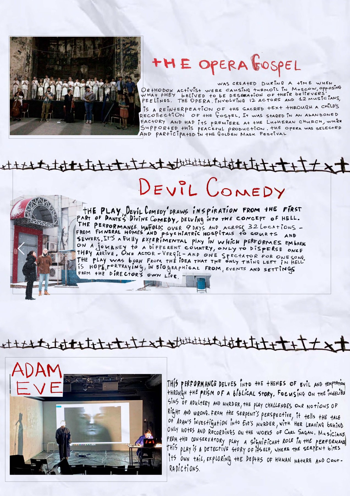
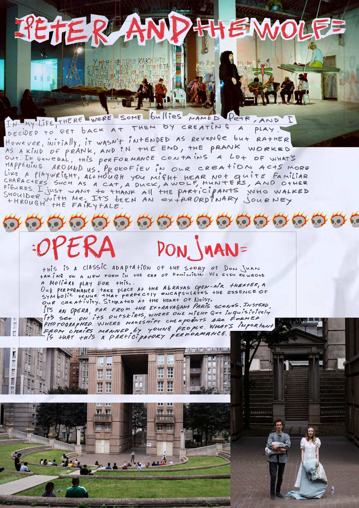

01Binary BioTheater, founded 2016. A transdisciplinary collective: 41 productions, 400+ events, 300+ participants, most of them non-professionals.

02Opera Gospel — Saint Anne's Lutheran Church, Saint Petersburg, 2018. Devil Comedy after Dante — thirty-three separate city addresses, one spectator at a time, nine days, 2020; nominated for the Golden Mask.03The Presentation of Self in Everyday Life, after Erving Goffman — installation and participation. Pause and Reflect.

04Peter and the Wolf — Wip Art Space, Moscow, 2021; Golden Mask finalist 2023. Opera Don Juan — Espaces d'Abraxas, Noisy-le-Grand, 2023.05FACT Institute, founded 2016 — the education and community arm of the collective, working with participants outside professional training.